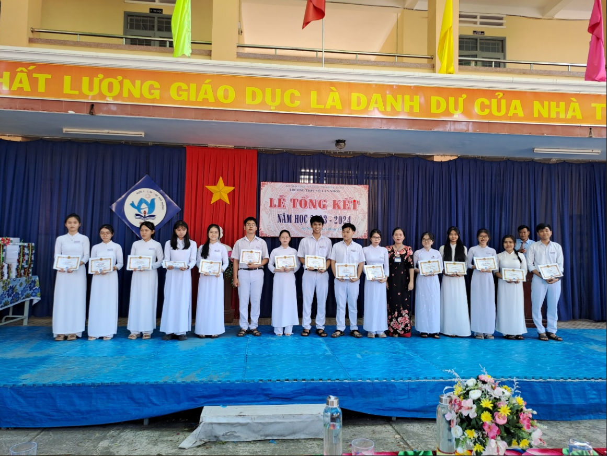
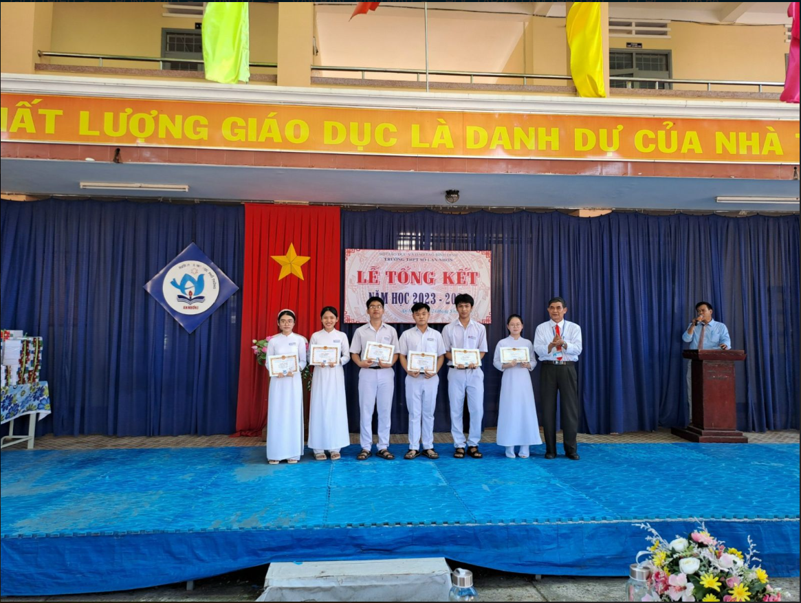
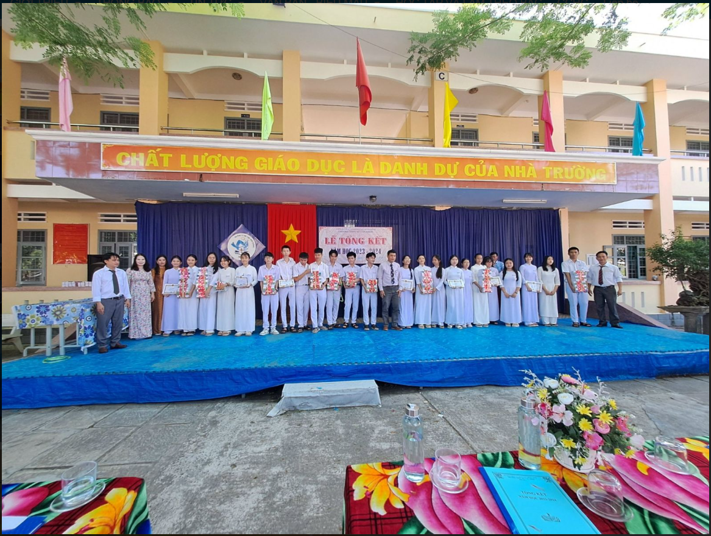

Sáng ngày 24/05/2024, Trường THPT Số 1 tổ chức Lễ tổng kết năm học 2023- 2024. Về dự buổi lễ tổng kết có đồng chí Trần Thiện Ngôn- UVBTV Thị Uỷ-Trưởng ban Ban tuyên giáo Thị uỷ An Nhơn, Ban đại diện Cha mẹ học sinh cùng toàn thể cán bộ, giáo viên, nhân viên cùng 1109 học sinh toàn trường tham dự. Trong năm học 2023- 2024, cả Thầy và trò của trường không ngừng phấn đấu nỗ lực nâng cao chất lượng dạy và học. Kết quả đạt được:
Tuyên truyền PCCC cho CBGVNV và HS lần 1 của Công an Tỉnh vào ngày 20/09/2023 và lần 2 của Công an Thị xã vào ngày 19/12/2023. Tập huấn và tuyên truyền TTATGT và kích hoạt tài khoản điện tử cho HS của Công an Thị xã vào ngày chủ nhật 24/09/2023. Tuyên truyền giáo dục DSSKSSVTN và tác hại của thuốc lá của Trung tâm Y tế Thị xã An Nhơn vào ngày 02/10/2023. Hội thi HS tìm hiểu Chiến lược phát triển gia đình Việt Nam và Chương trình giáo dục đạo đức, lối sống trong gia đình năm 2023 do Sở Văn hóa, Sở GD&ĐT và Tỉnh đoàn tổ chức tại Nhà văn hóa Thị xã An Nhơn vào ngày 22/10/2023, kết quả đạt giải Nhì toàn đoàn. ổ chức Ngoại khóa Phòng, chống tham nhũng cho HS lớp 10, 11 với hình thức: Sáng tác thơ, văn, vẽ tranh tuyên truyền và bình luận từ ngày 30/10/2023 đến 27/11/2023. Tổ chức tuyên truyền Nhân kỷ niệm 79 năm ngày thành lập QĐND Việt Nam (22/12/ 1944-22/12/2023) và 34 năm ngày hội QPTD (22/12/1989-22/12/2023) do Thị đội An Nhơn báo cáo và tặng quà cho CB-GV-NV là Bộ đội, con Liệt sỹ, con Thương binh, bệnh binh và tham gia Hội diễn văn nghệ tại Trung tâm chính trị Thị xã An Nhơn vào ngày 21/12/2023. Tư vấn Tuyển sinh Đại học năm 2024 do Báo chí Giáo dục tổ chức vào thứ 5 ngày 11/ 12/2023. Tổ chức khám sức khỏe cho học sinh toàn trường vào đầu năm học Tuyên truyền Tuyển sinh quân sự năm 2024 do Học viện Thông tin vào ngày 12/03/ 2024.
Tham gia Giải bóng chuyền nữ do TTVHTDTT tổ chức từ ngày 06-10/ 10/ 2023 tại Nhà thi đấu TDTT Thị xã An nhơn; Tổ chức Hội thi thành lập đội tuyển từ ngày 12/12 đến 18/12/2023 để chuẩn bị tham g Hội khỏe Phù Đổng cấp Tỉnh năm học 2023-2024 từ ngày 17-22/03/2024, kết quả đạt 01 Hì chương bạc và 01 Huy chương đồng môn Võ cổ truyền cấp Tỉnh. Tranh giải Bóng chuyền truyền thống học sinh năm học 2023-2024 tại trường từ ngày 07- 13/01/2024. Kết quả Nam Khối 10 (Nhất 10A5, Nhì 10A4); Khối 11 (Nhất 11A2, Nhì 11A3); Khối 12 (Nhất 12A1, Nhì 12A6); Nữ Khối 10 (Nhất 10A1, Nhì 10A3); Khối 11 (Nhất 11A9, Nhì 11A8); Khối 12 (Nhất 12A6, Nhì 12A8); và Vô địch toàn trường Nữ: Huy chương Vàng 12A6; Huy chương Bạc 10A1; Huy chương đồng 11A9. Nam: Huy chương Vàng 12A1; Huy chương Bạc 11A2; Huy chương đồng 10A5. Tranh giải Bóng chuyền nam, nữ học sinh THPT trên địa bàn Thị xã An Nhơn từ ngày 12-14/03/2024, kết quả đạt giải Nhì nam và nữ. Tranh giải bóng đá nam (5 người- Cúp bà Xê) học sinh THPT trên địa bàn Thị xã An Nhơn từ ngày 05- 14/4/2024. Tham gia giải Bóng chuyền Thị xã An Nhơn tổ chức từ ngày 26-29/04/2024 tại Nhà thi đấu TDTT Thị xã.
Tham gia Dự thi học sinh giỏi lớp 12 cấp Tỉnh vào ngày 22/10/2023. Kết quả: Đạt 05 giải, trong đó 01 giải Nhì (Lê Nguyễn Minh Trình 12A4- Địa lí) và 04 giải Khuyến khích (Đoàn Đăng Vinh 12A9 – Toán, Trương Võ Trường Thi 12A8 – Sinh, Hà Ngọc Huyền 11A9– Địa, Võ Thái Yên Nhi 12A8 – Sử) và 01 học sinh Lê Nguyễn Minh Trình 12A4- Địa lí Đạt giải Ba HSG cấp Quốc gia. Tổ chức nghiệm thu 02 đề tài KHKT với dự án: Mô hình xe tự hành giao thuốc (giải Nhì) do 02 học sinh: Lương Cao Pháp – 12A8, Nguyễn Trần Tài -12A9 và Nhận diện khuôn mặt IoT (giải Ba) do HS Đào Duy Hưng – 11A3 vào thứ 3, ngày 26/12/2023 tiếp tục bồi dưỡng dự thi cấp tỉnh vào tháng 02/2024. Tham gia dự thi học sinh giỏi lớp 11 cấp tỉnh vào ngày 18/03/2024. Kết quả: Đạt 05 giải KK. Trong năm học đã tổ chức: Thao giảng 12 tiết, Sinh hoạt chuyên đề 12 tiết, Dạy tốt 48 tiết (Toán 08, Ngữ văn 05, Ngoại ngữ 08, TD-GDQP&AN 08, Lý-Hóa-Sinh-CN-TB 13, Sử-Địa- GDKT&PL 06) và 320 tiết học xuất sắc. Kiểm tra hồ sơ của tổ trưởng, giáo viên và hoạt động sư phạm của 32 giáo viên xếp loại Giỏi. Học sinh lớp 10, 11 tham gia Hoạt đông trải nghiệm theo CTGDPT 2018. Tại buổi Lễ tổng kết nhà trường trao tặng phần thưởng cho 06 học sinh đạt danh hiệu học sinh xuất sắc, 396 học sinh đạt danh hiệu học sinh giỏi, 168 học sinh đạt danh hiệu học sinh tiên tiến
